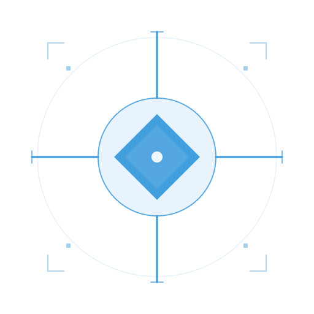
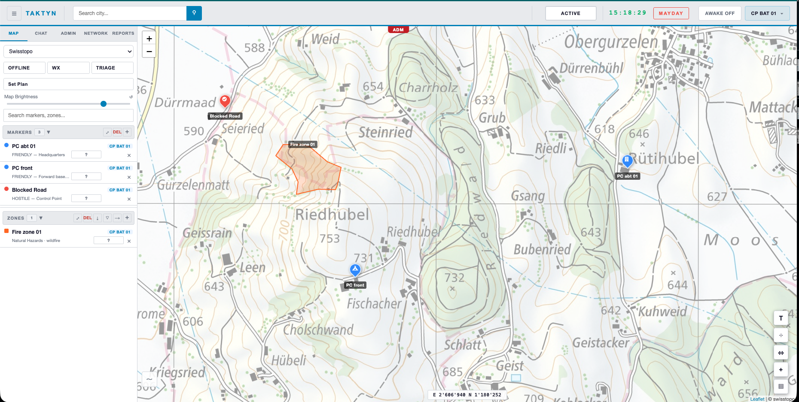
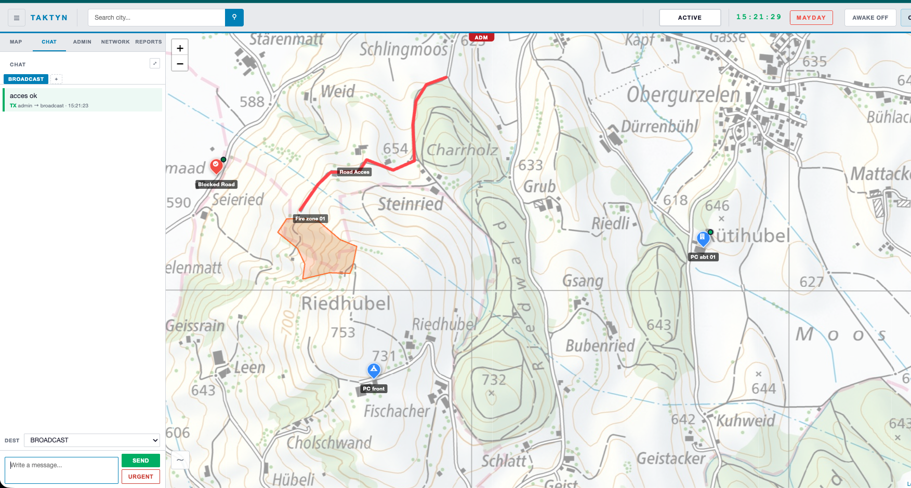
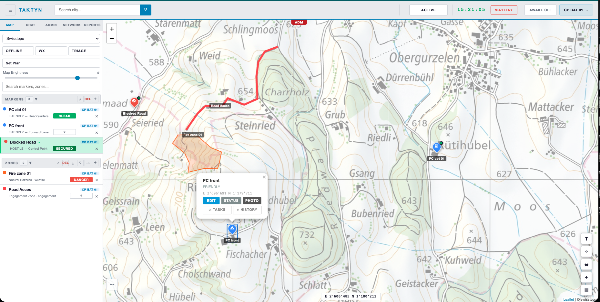
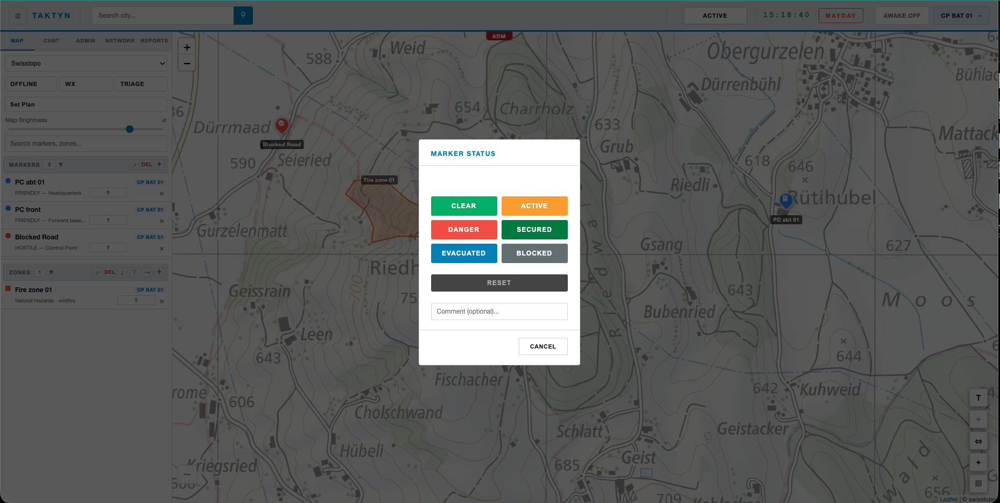
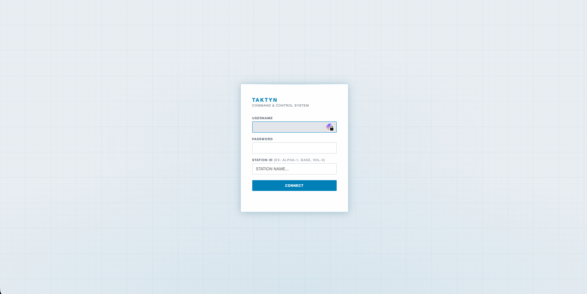

Carte tactique temps réel
Marqueurs, zones et positions GPS partagés instantanément entre tous les opérateurs connectés — la même image tactique, pour tout le monde, à la seconde près.

TAKTYNCarte tactique partagée, chat chiffré de bout en bout, radio hors réseau. TAKTYN réunit vos outils de coordination en une seule plateforme — et continue de fonctionner même sans internet.
Desktop, tablette ou navigateur — la même carte, en temps réel, pour toute l'équipe.
Marqueurs, zones et positions GPS partagés instantanément entre tous les opérateurs connectés — la même image tactique, pour tout le monde, à la seconde près.
Messages chiffrés AES-256-GCM côté client. Ni le serveur ni un tiers ne peut les lire.
Communication LoRa Meshtastic 868 MHz — la coordination continue même sans 4G ni internet.
Coupure réseau détectée en 30 secondes. Bascule automatique vers la radio et le cache local.
Un bouton pour déclencher une alerte prioritaire visible immédiatement par toute l'équipe.
Desktop (Mac / Windows / Linux) et client web optimisé pour smartphone et tablette Android, ou navigateur.
Chaque point (libre, actif, danger, sécurisé, évacué, bloqué) se met à jour en un clic.
Envoyez un message vocal directement dans le chat, chiffré comme le reste — disponible en 4G/5G. Le texte, lui, continue de passer même via la radio hors réseau.
Chaque unité suit son inventaire — véhicules, personnel, matériel — avec seuil d'alerte automatique. Vue consolidée pour le poste de commandement, et gestion des demandes de ravitaillement.
Préparez un plan sur un calque séparé — marqueurs, zones — sans toucher à l'opération en cours. Déléguez-le à un subordonné pour qu'il prépare sa partie, puis activez-le pour l'intégrer en direct.
Chaque mission — et chaque client — a son propre espace, jamais partagé. Plusieurs postes de commandement se synchronisent en continu ; si l'un tombe, les appareils basculent automatiquement sur un autre en moins de 30 secondes, sans perte de données.
Captures de l'interface — poste de commandement, carte tactique, chat opérateur.





Sept couches de protection, de la radio au chiffrement des messages.
Hébergement sur infrastructure Infomaniak, datacenters à Genève et Winterthour. Aucune donnée client ne transite hors de Suisse.
Pour les opérations en zone isolée — montagne, grand événement, zone sinistrée — TAKTYN peut tourner depuis un boîtier compact déployé sur site, avec son propre réseau WiFi et son relais radio. Toute l'équipe reste coordonnée même en coupure totale, et tout se resynchronise automatiquement avec le cloud dès que la connexion revient.
TAKTYN s'adapte aux équipes qui doivent coordonner des opérations en conditions réelles.
30 à 45 minutes, adaptée à votre activité — sans engagement.
30 jours en conditions réelles avec votre équipe, déductible du contrat.
Infrastructure dédiée, isolée, provisionnée pour votre organisation.
Programme ouvert à un nombre limité de partenaires en Suisse romande. Tarif préférentiel fixé selon la taille de l'équipe.
Décrivez votre activité et vos contraintes de coordination — réponse sous quelques jours.